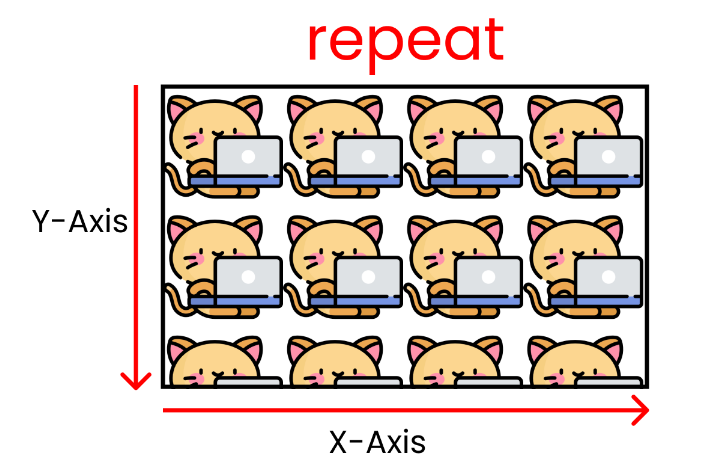
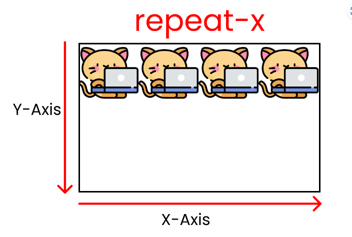
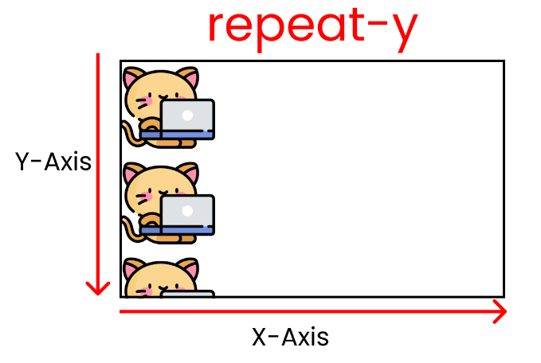
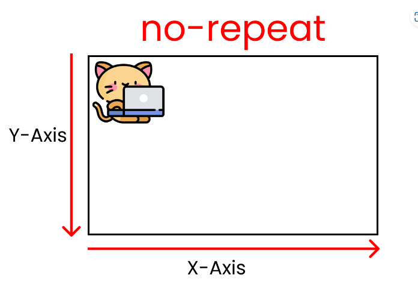

Usando esta propiedad, podemos añadir imágenes a lo largo de nuestra hoja de estilos.
Podemos usar bakbroung-image de dos maneras:
-- Con el path del directorio local.
-- Especificando la URl de la imagen.
¿Comó usar background-image a través del directorio?
Aquí tenemos la sintaxis para background-image cuando usamos el directorio 👇.
---------------------------
// Coloca la ruta dentro de las comillas simples---------------------------
}
background-image: url(directory path)?
Hay tres casos donde necesitamos especificar la ruta de la imagen en nuestro CSS:
1. Cuando la imagen y style.css están en la misma carpeta.
2. Cuando la imagen está en la siguiente carpeta.
3. Cuando la imagen está en la carpeta anterior.
Cuando la imagen y style.css están en la misma carpeta, se va ver de la siguiente manera.
Observa que kitty.png y style.cssestán en la misma carpeta padre llamada BACKGROUND-PROJECT:
--------------------------------------------------------------------------------------------------------------------------------
Podemos ajustar el tamaño de una imagen usando la propiedad background-size.
Podemos usar background-size de 3 maneras:
1. Usar los valores cover/contain
2. Establecer el alto y ancho de la imagen
3. usar auto
Podemos escribir la sintaxis luego de escribir el nombre del selector, igual a
// Podremos escribir aquí
.container{
background-size : cover;
}
Cuando usamos esta propiedad, estirará la imagen a toda la pantalla incluso cuando cambiamos el tamaño de la ventana.
Este valor conservará el tamaño de la imagen [Responsive Image] incluso cuando cambiamos el tamaño de la ventana.
--------------------------------------------------------------------------------------------------------------------------------
Esta propiedad nos permite repetir la imagen múltiples veces.
Esta propiedad tiene seis valores posibles:
1. repeat
2. repeat-x
3. repeat-y
4. no repeat
5. space
6. round
Usando este valor, podemos repetir la misma imagen múltiples veces a lo largo de los ejes X y Y tanto como el tamaño de la pantalla lo permita.
Este valor nos permite repetir la misma imagen múltiples veces a lo largo del eje x tanto como el tamaño de la pantalla lo permita.
Este valor nos permite repetir la misma imagen múltiples veces a lo largo del eje y tanto como el tamaño de la pantalla lo permita.
Podemos tener el tamaño original de nuestra imagen sin repeticiones usando este valor.

Trabaja con los ejes X y Y.
Podemos ver la principal diferencia en los espacios cuando cambiamos el tamaño de la ventana.
Esto funciona tanto para el eje x como el eje y.
La imagen es expandida cuando nosotros cambiamos el tamaño de la pantalla.
--------------------------------------------------------------------------------------------------------------------------------
Esta propiedad es usada para cambiar la posición de la imagen en la pantalla.
Podemos usar una combinación de estos valores:
1. top
2. left
3. right
4. bottom
5. percentage values
--------------------------------------------------------------------------------------------------------------------------------
Esta propiedad nos permite establecer el origen de nuestra imagen a través del CSS box model.
Tiene cuatro posibles valores:
1. border-box
2. padding-box
3. content-box
4. inherit
En el standard CSS box model, la parte exterior es border.
entonces luego tenemos el padding y finalmente tenemos el content en el centro.
--------------------------------------------------------------------------------------------------------------------------------
Esta propiedad es igual a background-origin.
Pero la principal diferencia es que background-clip CORTA la imagen para que quepa dentro del cuadro
mientras background-origin EMPUJA el contenido dentro del cuadro para que quepa.
Tiene cuatro valores posibles:
1. border-box
2. padding-box
3. content-box
4. inherit
--------------------------------------------------------------------------------------------------------------------------------
Esta propiedad nos permite manejar el comportamiento de nuestro contenido e imagen cuando hacemos scroll.
Hay tres valores posibles:
1. scroll
2. fixed
3. local
Cuando usamos scroll la imagen se fija y podemos desplazarnos libremente por nuestro contenido.
El valor fijo nos da un efecto de paralaje en el desplazamiento del mouse y produce múltiples imágenes siempre que nuestro contenido no termine.
--------------------------------------------------------------------------------------------------------------------------------
Podemos usar esta propiedad para establecer el background con color.
Existen muchas opciones pero las más populares son:
1. Color sólido usando nombre o el valor hexadecimal
2. Usando la función RGB()
3. Usando la función `linear-gradient()``
--------------------------------------------------------------------------------------------------------------------------------